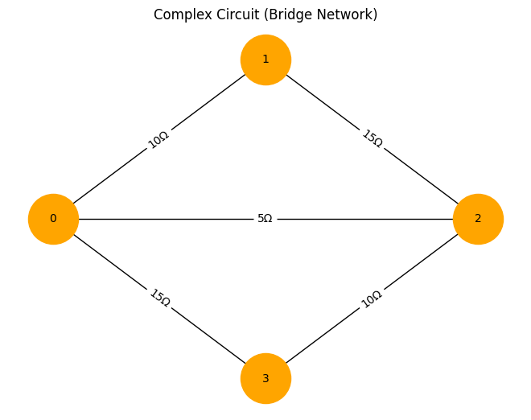
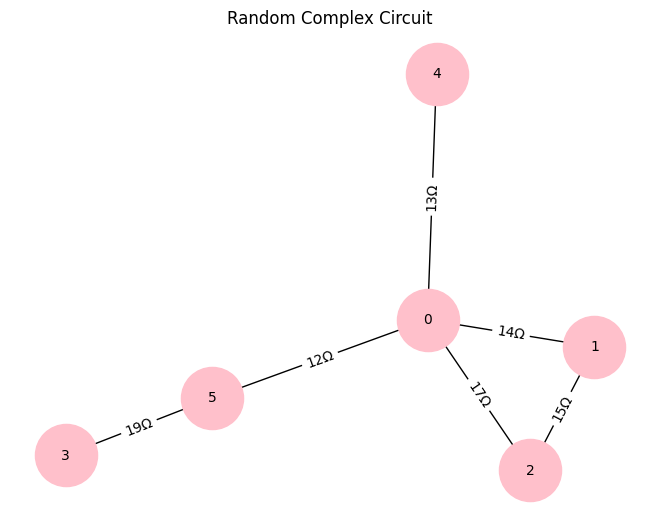

Problem 1
Equivalent Resistance Using Graph Theory
Motivation
Electrical circuits consist of resistors arranged in series, parallel, or mixed configurations. Calculating the equivalent resistance helps determine how a circuit behaves electrically, which is crucial in designing efficient electrical networks.
Traditionally, circuits are analyzed using Ohm’s Law and Kirchhoff’s Rules, but graph theory offers a systematic and automated approach. Representing a circuit as a graph allows for efficient reduction of resistors using algorithms, making it useful in circuit simulation, optimization, and large-scale network analysis.
Graph Theory Approach to Circuit Analysis
A circuit can be represented as a graph, where:
- Nodes (vertices) represent circuit junctions.
- Edges represent resistors with weights equal to their resistance values.
- Graph reductions simplify complex resistor networks step by step.
Types of Resistor Combinations
1. Series Combination
- Resistors connected end-to-end.
- Graph representation: A direct path between two nodes.
- Formula:
\(\(\[ R_{\text{eq}} = R_1 + R_2 + \dots + R_n \]\)\)
📌 Graph Reduction: Merge nodes into a single edge with summed resistance.
2. Parallel Combination
- Resistors share the same two nodes.
- Graph representation: Multiple edges between the same pair of nodes.
- Formula:
\(\(\[ \frac{1}{R_{\text{eq}}} = \frac{1}{R_1} + \frac{1}{R_2} + \dots + \frac{1}{R_n} \]\)\)
📌 Graph Reduction: Replace multiple edges with a single edge of equivalent resistance.
3. Complex Networks (Bridges, Loops, etc.)
- Circuits with mixed connections or cycles (e.g., Wheatstone Bridge).
- Graph representation: Cycles in the circuit graph.
- Solution Methods:
- Graph traversal (DFS/BFS) to detect connectivity.
- Transformations to reduce components.
- Numerical methods (e.g., Kirchhoff’s Laws, Mesh Analysis).
Algorithm for Calculating Equivalent Resistance Using Graph Theory
Step 1: Construct Graph Representation
- Nodes = Junctions in the circuit.
- Edges = Resistors (weighted by resistance value).
Step 2: Identify and Reduce Series Resistors
- Use graph traversal (DFS/BFS) to detect linear chains of resistors.
- Replace series resistors with a single equivalent resistor.
Step 3: Identify and Reduce Parallel Resistors
- Detect multiple edges between the same pair of nodes.
- Replace them with a single equivalent resistor using the parallel formula.
Step 4: Handle Complex Circuits (Loops, Bridges, etc.)
- Use Kirchhoff’s Laws or Numerical Methods for cycles.
- Reduce step by step until only two nodes remain.
Step 5: Output the Final Equivalent Resistance
Example Cases
Example 1: Simple Series Circuit
📌 Graph Representation:
- Nodes: A → B → C
- Edges: A-B (5Ω), B-C (10Ω)
📌 Reduction:

Example 2: Parallel Circuit
📌 Graph Representation:
- Nodes: A, B
- Edges: A-B (5Ω), A-B (10Ω)
📌 Reduction:

Example 3: Complex Circuit (Wheatstone Bridge)
📌 Graph Representation:
- 5 Nodes, 6 Edges
- Requires Graph Reduction + Kirchhoff’s Laws.


Conclusion
Graph theory provides an efficient and structured way to analyze circuits, making it ideal for large and complex networks. This approach enables automation, making it useful for both theoretical studies and real-world circuit design.